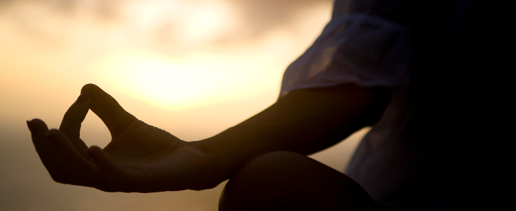
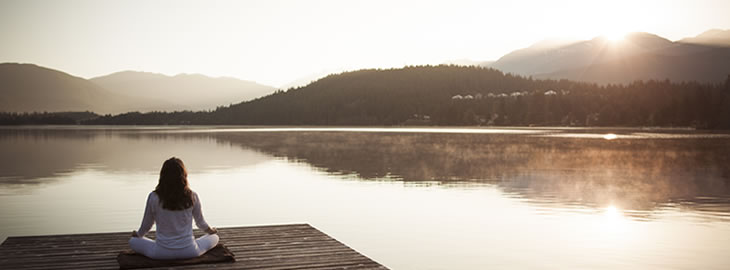

जीवन पहले से ही विविधताओं से भरा हुआ है, बहुत सारी गतिविधियाँ और जिम्मेदारियाँ होती हैं। ऐसे में हम राजयोग अभ्यास के लीयए समय कैसे निकाल सकते हैं? यही तो राजयोग की सुन्दरता है कि इसे कहीं भी और कभी भी किया जा सकता है।
राजयोग अभ्यास के लिए खास रूम अथवा जगह की आवश्यकता नहीं है। कोई भी एकान्त और शान्त स्थान या आरामदायक कुर्सी भी चल सकती है। अपनी आन्तरिक गहराई को समझने के लिए लगातार और नियमित समय निश्चित करें। कुछ ही समय में आपको ऐसी जगह मिलेगी जिसकी तरफ आप आकर्षित होने लगेंगे जहाँ पर आपने अपनी शान्ति की स्थिति से और आत्म चिन्तन के अभ्यास से शान्ति का वातावरण बनाया होगा। ऐसी नेयुक्त जगह पर आप जब ओर जितनी बार बी जाना चाहे तो जा सकते है ।
जहा भी आप कामकाज करते है, यदि आप थोड़ा सा असामान्य/ रचनात्मक तरीके से सोचेंगे तो ज़रूर आप को अपना मैडिटेशन कहा और कैसे करना है, उस के लिए कोई अच्छा सुजाव निकलेगा | मिसाल के तोर पे पानी पीने के समय कुछ क्षणों के लिए अपने भीतर की शान्ति को सुनने का अभ्यास करें । या फिर किसी कार्य-वश एक जगा से दूसरी जगा जाते वक्त कुछ मिनटों के लिए शान्ति का अनुभव कर सकते हैं । आपके सहकर्मियों को पता भी नहीं चलेगा कि आप मेडिटेशन कर रहे हैं लेकिन वो आपकी स्थिरतम शान्ति को ज़रूर महसूस करेंगे।
एक जगह से दूसरी जगह जाने में जो समय आपको लगता है, चाहे पैदल, बस या ट्रेन का सफर हो, इसे हम इस्तेमाल कर सकते हैं, अपनी भीतरी निशब्दता और मौन की यात्रा कर सकते हैं। आंखे खुली रखकर राजयोग अभ्यास की पद्धति इस भीतरी यात्रा को सम्भव और व्यावहारिक बना देता है।
आप किसी भी स्थान पे स्वात्मानुभति और परमात्मा के साथ जुड़ सकते हो। सम्परूण पृथ्वी योग करने के लिये उपयुक्त है। चाहे घर के अंदर या बाहिर - सूरज की रोशनी से भरा हुआ समुद्री किनारा हो या फिर किसी अस्पताल का प्रतिक्षा कक्ष हो । कहीं भी शान्ति और स्थिरता का अभ्यास कर सकते है। अपने पसन्द की कोई भी जगह चुन सकते हैं।
>जैसे ही आप अपने भीतर की शांति को बनाना सीख लेते हैं, आपको महसूस होगा कि आप किसी बी वक्त बहुत ही सरलता से उस अवस्था को पा सकते हैं। जब आपके आस-पास बहुत सारे लोग हों या फिर आपके आस-पास बहुत शोर शराब हों या फिर उपद्रव हो तो भी आप आराम से आपने अंदर की शान्ततम जगह में जा सकते हैं - जो आपकी आत्मा की मौलिक स्थिति है ।
योग का सर्वश्रेष्ठ और सुन्दर अनुभव तब हो सकता है जब आप अकेले उस एक परमात्मा के साथ हों। आप चाहो तो ये अभ्यास स्वयं बैठकर कर सकते हैं , या फिर औरो के साथ मिलकर भी कर सकते हैं । विश्व भर में ब्रह्माकुमारीज़ के सेन्टर्स हैं जहाँ पर मैडिटेशन हॉल / रूम बने हुए हैं जहाँ आप कभी भी जाकर शान्ति के उन क्षणों को अनुभव कर सकते हैं। कुछ ब्रह्माकुमारीज़ सेन्टर्स को इनर स्पेश भी कहा जाता है। विश्व भर में एक विचारधारा के लोग कभी-कभी एकसाथ मिलकर मेडिटेशन करना चाहते हैं। इस समझ के साथ कि सभी मिलजुल कर एक ही समय पर किये गये सकारात्मक विचारों के योगदान से उनके शुभ कामनायें की शक्ति और पोहोंच ओर भी अदिक बड़ सकती हैं।
1978 में विश्व भर में हर जगह पर एक घण्टे तक शान्ति से बैठकर योगाभ्यास करने की यह प्रथा शुरू हुई जो महीने के हर तीसरे रविवार को होती है। इसक लक्ष्य है कि हम अपने शान्ति , प्रेम और सकारात्मक प्रकम्पनों का दान विश्व और हमारे अनमोल पृथ्वी वासियों को करें। अगर हम यह याद रखें कि विश्व हमारा अपना घर है तो हम सभी मिलजुलकर विश्व के घाव भरके एक आशा की किरण फैला सकते हैं।
पूरे दिन में शान्ति और सुकून का वातावरण खुद बनाने के अलावा कभी-कभी हम अपनी नियमित दिनचर्या से समय निकालकर एक आध्यात्मिक रिट्रीट के स्थान पर भी जासकते हैं। किसी भी प्रकार की रिट्रीट में जाना पुनः अपने भीतर से जुड़ने की दिशा में रखा गया पहला कदम हो सकता है। कभी कभी अपने आपको परिस्थिति से अलग करने का विचार आता है । विशेष समय निकालकर बाहरी तौर पर भौतिक रूप से कुछ परिवर्तन करने का ख्याल आता है। लेकिन वास्तविक रिट्रीट का, क्या जिसमें हम अपने भीतर की गहराईयों तक उतर जायें? जब हम अपने ऊपर काम करते हैं तब हम अपनी भीतर की शान्त जगह पर लौटते हैं जहाँ हम अपने वास्तविक स्व के साथ पुन: जुड़ सकते हैं। यह हमारा आध्यात्मिक स्व है जो हमारे अन्तर में है। वो हिस्सा जो कभी भी बदलता नहीं है। स्वयं के लिए विशेष समय निकालना यह मेडिटेशन के सफर की प्रक्रिया है। मेडिटेशन हमें अपने आन्तरिक स्व के सन्तुलन की तरफ लौटाता है, जहाँ हमारे विचार, भावनायें, ऊर्जा और समय का उत्कृष्ट और बहुमूल्य उपयोग होता है। अपने वास्तविक पहचान की सही समझ और मन की जागृति की स्थिति पर सबकुछ निर्भर करता है। यहाँ से हम अपने जीवन के अत्यधिक सकारात्मक अनुभवों के दरवाजे को खोलने की शुरुआत करते हैं। हम अपने जीवन में भौतिक चीजों के बजाए आध्यात्मिक बातों को महत्व देना शुरु करते हैं। हम मूल्याधारित गुणवत्तापूर्ण जीवन के रचना की नींव डालते हैं, जहाँ हम उदारता और प्रेम को अपने जीवन में लाने में समर्थ होते हैं। हमारे विचार स्पष्ट होते हैं और निर्णय क्षमता बढ़ती है। यह सच्ची रिट्रीट की सहायता से हम उस अवस्था को पूर्व पासकते है जहाँ हम पुनः अपनी सत्यता से जुड़कर सदियों पुराने प्रश्न, "मैं कौन हूँ" का उत्तर, समाज ओर अनुभव से पा लेते हैं। और तब ही हम आदि और अन्त के संगम पर पोहंचते हैं। जहाँ पर इस प्रश्न की समाप्ति होती हैं वहीं पर अनुभवों की शुरुआत होती है, इस सफर का आनन्द लें….